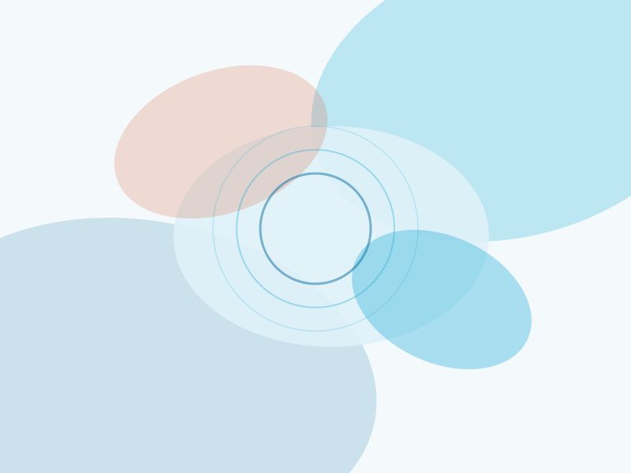

Biblioteca
Elige un capítulo: lee el texto en línea, descarga el PDF en inglés o español y escucha el audio por protocolo. Las pistas marcadas «próximamente» aún se están produciendo.

Protocolos del capítulo
Toca una pista para escucharla. Si hay transcripción, se muestra sincronizada.